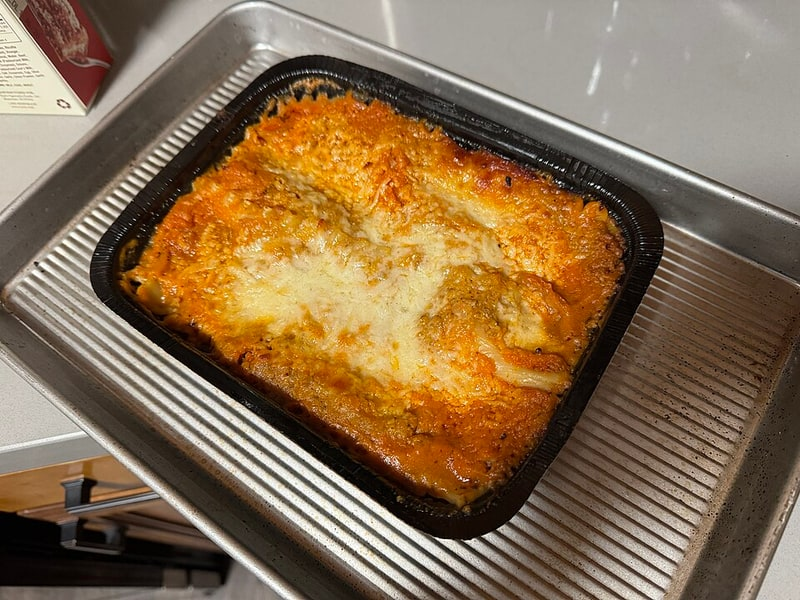

Polskie obiadki
Lasagne z mięsem
Lasagne z mięsem: 8 g białka, 160 kcal, 15 g węglowodanów i 7 g tłuszczu na 100 g. Kategoria: Polskie obiadki.
Kalorie160 kcalna 100 g
Białko / proteiny8 g
Węglowodany15 g
Tłuszcz7 g
Cena (szac.)~1,73 złza 100 g
Ceny zaktualizowano: maj 2026 (szacunek — ceny w popularnych supermarketach)
Porcja: kawałek (300g)
| Kalorie | 480 kcal |
|---|---|
| Białko | 24 g |
| Węglowodany | 45 g |
| Tłuszcz | 21 g |
| Cena (szac.) | ~5,19 zł |
Szczegółowe składniki odżywcze na 100 g
| Wartość energetyczna (kalorie) | 160 kcal |
|---|---|
| Białko (proteiny) | 8 g |
| Węglowodany | 15 g |
| Tłuszcz | 7 g |
| Tłuszcze nasycone | 3.5 g |
| Tłuszcze nienasycone | 3.5 g |
| Witaminy i minerały | Żelazo, Tiamina (B1), Potas |
| Współczynnik kcal / 1 g białka | 20.0 |
| Cena produktu (szac. za 100 g) | ~1,73 zł |
| Cena za 100 g białka (szac.) | ~21,63 zł |